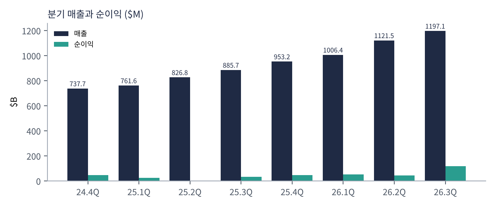
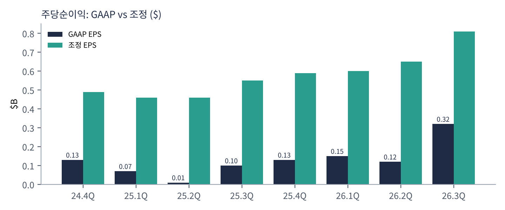
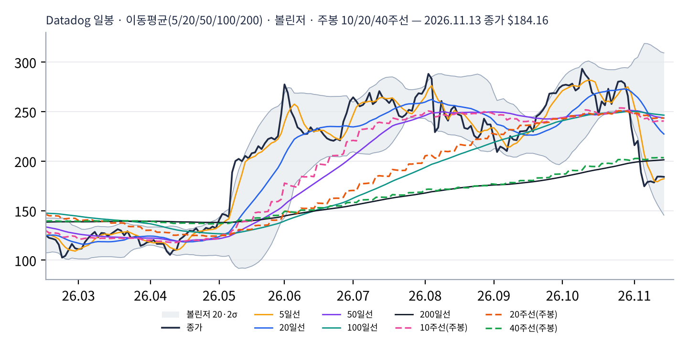
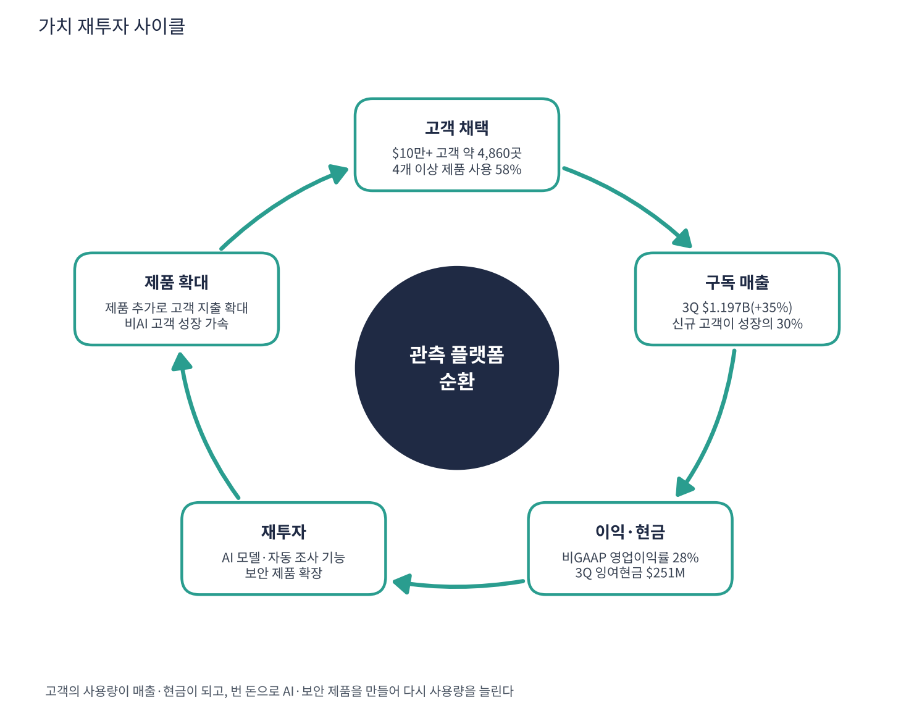

데이터독은 기업의 서버·앱이 잘 돌아가는지 실시간으로 보여주는 '관측 플랫폼'을 구독형으로 파는 회사다. 매출이 35% 성장하고 잉여현금이 큰 대신, 최대 AI 고객의 사용량 감소와 높은 밸류에이션이 부담인 회사다.
| 항목 | 내용 |
|---|---|
| 종목 | Datadog (DDOG) · NASDAQ · 클라우드 관측·보안 소프트웨어 · 뉴욕 |
| 밸류에이션 | PER 258배 · P/S 16.17배 (11/13 종가 $184.16) |
| 최근 분기(3Q26) | 매출 $12.0억(+35%), 비GAAP EPS $0.81, GAAP EPS $0.32, 비GAAP 영업이익률 28% |
| 고객 | 연 $10만 이상 고객 약 4,860곳(회사) |
| 가이던스 | 2026 매출 $45.15~45.25억, 4Q $11.9~12.0억, 비GAAP EPS $2.73~2.75 |
| 현금·부채 | 스캐너: 현금 $52.3억, 차입금 $13.1억, TTM 잉여현금 $12.3억 |
| 직책 | 인물 | 역할·특징 |
|---|---|---|
| CEO | 올리비에 포멜 | 공동창업자. AI 관련 제품 확장과 고객 다변화 강조 |
경영 스타일: '제품을 계속 붙여 고객당 지출을 키우는 구조'. 고객이 쓰는 제품 수가 늘수록 매출이 커지고, 비GAAP 영업이익률 20%대 후반을 유지하면서 잉여현금을 만든다. 최대 AI 고객 한 곳의 사용량 감소가 최근 주가 급락의 배경으로 보도됐다(보도).
로그·지표·추적·보안을 한 화면에서 보고 AI로 원인을 찾는 기능을 붙인다.
AI 에이전트가 장애 원인을 찾는 기능과 보안 제품으로 영역을 넓힌다.
다음 실적발표는 세 가지 질문에 답하는 자리다.
1. 재투자가 이번 분기에 개선되나?
2. 악재 'AI 고객 의존' 부담이 줄어드나?
3. PEG 판정이 바뀌나?
한 줄 판정 규칙: 첫 질문의 재투자가 좋아지면 약한 고리가 풀리고, 그렇지 않으면 현재 사이클의 약점이 그대로 남는다.
일정: 다음 발표일은 확인 필요(이번 분기 발표 후 일정 미확정). 위 현재값은 이 보고서의 기존 숫자다.
| 분기 | 매출 | 순이익 | EPS | 조정 EPS | 특이 사항 |
|---|---|---|---|---|---|
| 2024.4Q | $7.4억 | $0.5억 | 0.13 | 0.49 | |
| 2025.1Q | $7.6억 | $0.2억 | 0.07 | 0.46 | |
| 2025.2Q | $8.3억 | $0.0억 | 0.01 | 0.46 | |
| 2025.3Q | $8.9억 | $0.3억 | 0.10 | 0.55 | |
| 2025.4Q | $9.5억 | $0.5억 | 0.13 | 0.59 | 4분기 값 근사* |
| 2026.1Q | $10.1억 | $0.5억 | 0.15 | 0.60 | |
| 2026.2Q | $11.2억 | $0.4억 | 0.12 | 0.65 | |
| 2026.3Q | $12.0억 | $1.2억 | 0.32 | 0.81 | 3Q 비GAAP 영업이익률 28%, GAAP 순이익 급증(세금 효과 등 확인 필요) |


* 4분기 값은 '연간 − 1~3분기 합' 근사치. 조정 EPS는 트레이딩뷰 Reported(비GAAP)다. 2026년 3분기 GAAP 순이익 $1.18억에는 일회성 요인이 섞였을 수 있다(확인 필요).
흐름 요약: 분기 매출이 $7.38억에서 $11.97억으로 62% 늘었고 비GAAP EPS는 $0.49에서 $0.81로 올랐다. GAAP 이익은 주식보상 때문에 비GAAP보다 훨씬 작다. 분기 설비투자는 구하지 못했다.
| 항목 | 값 | 비고 |
|---|---|---|
| 3Q 매출 | $11.97억 | +35% |
| $10만+ 고객 | 약 4,860곳 | 회사 |
| 4개 이상 제품 사용 고객 | 58% | 회사 |
| 신규 고객 기여 | 성장의 약 30% | 회사 |
제품 확대가 매출 성장의 축이다. 부문별·지역별 매출 비중은 이번에 구하지 못했다. 최대 AI 고객 비중과 감소폭은 공개 값을 확인하지 못했다.
데이터독은 '모든 클라우드 운영 데이터를 한 곳에서 보게 하는 플랫폼'을 목표로 한다.
| 축 | 최근 움직임 |
|---|---|
| 제품 | 관측·보안·AI 에이전트 기능 확대 |
| 고객 | 대형 고객 4,860곳, 비AI 고객 성장 가속 |
| 위험 | 최대 AI 고객 사용량 변동, 높은 밸류에이션 |

| 이동평균 | 값 | 종가 대비 | 해석 |
|---|---|---|---|
| 5일선 | $182.20 | +1.1% | 현재가가 위 |
| 20일선 | $227.39 | -19.0% | 현재가가 아래 |
| 50일선 | $243.53 | -24.4% | 현재가가 아래 |
| 100일선 | $246.46 | -25.3% | 현재가가 아래 |
| 200일선 | $201.36 | -8.5% | 현재가가 아래 (-9%) |
주봉 흐름: 52주 저점 $98.0(2026.2.24)에서 급등해 2026.10.12 고점 $300.7을 찍고 11월 $184까지 하락했다. 현재가는 20·50·100·200일선 모두 아래다.
| 규칙 | 기준 | 현재 값 | 신호 |
|---|---|---|---|
| 장기 추세 필터 | 종가 vs 200일선 | $184.16 < $201.36 | 매도 |
| 중장기 교차 | 50일선 vs 200일선 | $243.53 > $201.36 | 매수 |
| 단기 교차 | 20일선 vs 50일선 | $227.39 < $243.53 | 매도 |
| 돈키언 채널 | 55일 고가 $300.68 / 저가 $170.50 | 중간값 $235.59 아래 | 매도 |
| 1개월 모멘텀 | 21거래일 수익률 | -30.8% (기준 $266.25) | 매도 |
| 3개월 모멘텀 | 63거래일 수익률 | -25.5% (기준 $247.32) | 매도 |
| 6개월 모멘텀 | 126거래일 수익률 | -11.5% (기준 $207.98) | 매도 |
| 12개월 모멘텀 | 252거래일 수익률 | -3.5% (기준 $190.89) | 매도 |
| 종합 (8개 평균) | -0.75 | 강한 매도 |
해석: 8개 신호 중 매수 1개, 매도 7개(점수 -0.75, 강한 매도)다. 14일 ATR $15.25 (8.3%).
| 가격·조건 | 무엇이 바뀌나 | 의미 |
|---|---|---|
| $201.36 돌파 | 200일선 | 매도 → 매수 |
| 20일선이 50일선 위로 | 20/50 교차 | 매도 → 매수 |
| $235.59 돌파 | 돈키언 중간값 | 매도 → 매수 |
| $266.25 돌파 | 1개월 기준가 | 매도 → 매수 |
| $247.32 돌파 | 3개월 기준가 | 매도 → 매수 |
| 50일선이 200일선 위로 | 50/200 교차 | 이탈하면 매수 → 매도 |
| 구분 | 가격대 | 근거 |
|---|---|---|
| 저항 1 | $227.4 ~ 243.5 | 20일선 $227.4, 50일선 $243.5 |
| 저항 2 | $246.5 / $300.7 | 100일선 $246.5, 52주 고점 $300.7 |
| 지지 1 | $182.2 / $170.5 | 5일선 $182.2, 55일 저점 $170.5 |
| 지지 2 | $98.0 | 52주 저점(2026.2.24), 200일선 $201.4는 이미 하향 |
점수는 −0.75로 매도 우위다. 14일 ATR이 $15.3로 변동이 크다. 200일선($201.4) 아래라 추세 전환 확인 전에는 비중을 두지 않고, 5일선($182.2) 위에서 반등이 이어질 때 분할로 접근한다. $170.5 종가 이탈 시 정리한다.
| 악재 요인 | 내용 | 강도 |
|---|---|---|
| AI 고객 의존 | 최대 AI 고객 사용량 감소(보도) | 높음 |
| 밸류에이션 | P/S 16배, 비GAAP PEG 약 2.0 | 높음 |
| GAAP 이익 규모 | 주식보상으로 GAAP 이익 작음 | 중간 |
| 추세 | 52주 고점 $300.7 대비 −39% | 높음 |
| 티커 | 회사 | PER(TTM) | PEG | P/S | EPS 성장(YoY) |
|---|---|---|---|---|---|
| DDOG | 데이터독 | 258.0배 | 1.82 | 16.17배 | +142% |
| NET | 클라우드플레어 | 적자 | – | 41.62배 | – |
| SNOW | 스노우플레이크 | 적자 | – | 19.20배 | – |
| NOW | 서비스나우 | 73.7배 | – | 6.80배 | -16% |
| DT | 다이나트레이스 | 83.0배 | – | 6.21배 | -68% |
| ESTC | 엘라스틱 | 24.7배 | – | 5.17배 | – |
DDOG 첫 행 PEG·성장률은 스캐너 값(GAAP 기저효과)이다. NET·SNOW·ESTC는 PER·성장률이 비어 있다. 값은 스캐너 기준이다.
데이터독은 현금성 자산 $52.3억이 차입금 $13.1억보다 훨씬 크다. TTM 잉여현금은 $12.3억이다.
| 지표 | 값 | 계산·출처 | 해석 |
|---|---|---|---|
| 현금 | $52.3억 | 스캐너 | – |
| 총차입금 | $13.1억 | 스캐너 | 순현금 약 $39.2억(내 계산) |
| TTM 잉여현금흐름 | $12.3억 | 스캐너 | 잉여현금 수익률 1.9% |
| TTM EBITDA(GAAP) | $2.6억 | 스캐너 | 주식보상으로 작음 |
| 기준 | 값 | 비고 |
|---|---|---|
| P/S (TTM) | 16.17배 | 스캐너 |
| 동종 | NET 41.6, SNOW 19.2, NOW 6.8, ESTC 5.2 | 11/13 스캐너 |
해석: 스트레스 가정(내 가정): P/S 12배 $137(-26%) · P/S 14배 $159(-13%) · P/S 18배 $205(+11%) · P/S 20배 $228(+24%).
| 지표 | 값 | 판정 |
|---|---|---|
| PER (GAAP TTM) | 258배 | 순이익이 작아 의미 낮음 |
| PER (비GAAP TTM) | 약 69.5배 | $184.16 ÷ 최근 4분기 합 $2.65(내 계산) |
| EV / EBITDA | 약 240배 | EV 약 $625.8억 ÷ $2.6억(GAAP, 내 계산) |
| EV / 잉여현금 | 약 51배 | $625.8억 ÷ $12.3억(내 계산) |
| 방식 | PER | EPS 성장률 | PEG | 판정 |
|---|---|---|---|---|
| 트레이딩뷰 (GAAP TTM) | 258배 | +142% | 1.82 | 기저효과(GAAP EPS가 작음) |
| 비GAAP 기준(내 계산) | 69.5배 | +35% | 약 1.99 | 최근 4분기 $2.65 ÷ 직전 4분기 $1.96 |
판정: 두 방식 모두 PEG 1.0 초과로 투자 적격 구간(≤1.0)이 아니다. 성장은 빠르지만 가격이 이미 많이 반영돼 있다.

데이터독의 사이클은 고객 채택 → 구독 매출 → 이익·현금 → AI·보안 재투자 → 제품 확대 → 더 많은 채택이다. 고객이 쓸수록 매출이 늘고, 번 현금으로 제품을 늘려 다시 고객 지출을 키운다.
| 고리 | 현재 숫자 | 고리 강도 | 약해지는 신호 |
|---|---|---|---|
| ① 고객 채택 | $10만+ 고객 약 4,860곳, 4개+ 제품 58% | 강함 | 신규 고객 둔화 |
| ② 구독 매출 | 3Q +35%, 신규 고객 성장 기여 약 30% | 강함 | AI 고객 사용량 감소 |
| ③ 이익·현금 | 영업이익률 28%, 3Q 잉여현금 $2.51억 | 강함 | 마진 하락 |
| ④ 재투자 | AI 모델·자동 조사·보안 제품 | 보통 | R&D 효율 저하 |
| ⑤ 제품 확대 | 제품 추가로 고객 지출 확대 | 보통 | 교차판매 둔화 |
구조: ①②③이 강하다. AI 고객 사용량이 ②에서 흔들리는 점이 가장 큰 위험이다.